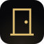

Rivalatch · doorThe shared ship door for AI agents.
Rivalatch is the shared ship door for AI agents. Every push to Qoresence main gets a Rivalatch ship receipt — pass or fail, with a repro — from the Rivalatch ship receipt workflow. Mobile Glass can knock the door for the current commit.